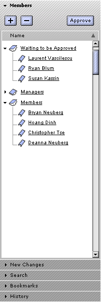

| | |
Table of Contents | Last | Next
Administering Your Two Way Web Sites
This section answers the following questions:
How do I Rename or Delete a Two Way Web Page?
To rename a page while browsing, select File > Rename Page. This option will be disabled if you are not a Member or Manager of the current Two Way Web Site. A popup window will appear prompting you for the new page name. After pressing the OK button Paper Airplane will attempt to rename the page. If the page is currently being edited by you or another user then an error message will appear informing you that the page can not be renamed until editing is finished.
To delete a page while browsing, select File > Delete Page. This option will be disabled if you are not a Manager of the current Two Way Web Site. A popup window will appear asking if you are sure you would like to delete the current page. Once deleted, the page can not be recovered. If the page is currently being edited by you or another user then an error message will appear informing you that the page can not be deleted until editing is finished.
How do I Rename or Delete a Two Way Web Site?
Paper Airplane 1.0 does not allow Two Way Web Sites to be renamed or deleted.
How do I Add or Remove Members?
To add or remove a member, you must open the Members Panel. There are a variety of ways to do this. If the Sidebar is closed, pressing the Members button will cause the Sidebar to automatically open and the Members Panel will be shown:
The Members Button
You can also manually open the Sidebar by pressing the Sidebar button:
The Sidebar Button
and then selecting the Members Panel with your mouse.
The Members Panel looks as follows:

The Members Panel in the Sidebar
To add or remove a member, you must be a Manager in the current Two Way Web Site.
To add a member, first press the + button. If you did not first select either the Members group or the Managers group in the tree-outline, then a dialog will appear asking you if you want to add a Member or a Manager. Select which you would like to add and then press either the OK or Cancel buttons.
A new entry in either the Members or Managers group will now appear, with the name <New Member> or <New Manager>. The cursor will be blinking and you can change this entry into the username of the member you would like to add. After pressing enter, a dialog will appear as Paper Airplane attempts to see if that username actually exists. If the user does not exist, or if the user is already a member of the current web site, then the cursor will begin blinking in the <New Member> or <New Manager> entries for you to try a different username.
Press the Escape key to quit entering a username; the <New Member> or <New Manager> entry will disappear.
To delete a member, either select the username with your mouse and press the - button or your Delete key. If no usernames are selected the - button will be disabled. You can select multiple usernames with the Shift or Control keys and your mouse and delete them at the same time. A dialog will appear asking you if you are sure you would like to delete these users. The Managers and Members groups can not be selected and deleted.
Note: The Add, Remove, and Approve buttons in the Members Panel are disabled for Super-Public sites. The Waiting to be Approved and Members folders in the panel are also disabled. Since Super Public sites are just that, we don't want random Managers to come in and delete the other managers.
How do I Change a Manager into a Member or a Member into a Manager?
To change a member's role, you must open the Members Panel. There are a variety of ways to do this. If the Sidebar is closed, pressing the Members button will cause the Sidebar to automatically open and the Members Panel will be shown:
The Members Button
You can also manually open the Sidebar by pressing the Sidebar button:
The Sidebar Button
and then selecting the Members Panel with your mouse.
The Members Panel looks as follows:
The Members Panel in the Sidebar
You must be a Manager to change any members' roles.
To change a Member or Members into Managers, simply select all of their names and drag them to the Managers group. You can also cut the Members and paste them into the Managers group. However, the copy function is disabled for cut & paste.
To change a Manager or Managers into Members, simply select all of their names and drag them to the Members group. You can also cut the Managers and paste them into the Members group. The copy function is also disabled here as well.
Note: The Approve button is disabled for Super Public and Public Two Way Web Sites. The Waiting to be Approved folder in the Members Panel is also disabled. This is because approval is not needed for potential new members to become authorized members.
How do I Approve a New Member?
A Restricted Public and Private Two Way Web Site requires that all members that have asked to join be approved by a Manager. When a potential new member presses the Join this Site button and joins your site, they do not have instant access as a Member. Instead, their usernames get placed in the Waiting to be Approved area in the Members Panel in the Sidebar. You must then approve them.
To approve a new member, you must open the Members Panel. There are a variety of ways to do this. If the Sidebar is closed, pressing the Members button will cause the Sidebar to automatically open and the Members Panel will be shown:
The Members Button
You can also manually open the Sidebar by pressing the Sidebar button:
The Sidebar Button
and then selecting the Members Panel with your mouse.
The Members Panel looks as follows:
The Members Panel in the Sidebar
You must be a Manager to approve a new member.
Select the usernames in the Waiting to be Approved area that you would like to approve with your mouse, then press the Approve button. A dialog will appear asking you if you would like to approve these users as Managers or as Members. Select one of these two options and either press the OK button or the Cancel button.
To remove a user from the Waiting to be Approved list, select their usernames and then press the - button. You will be prompted on whether you are sure you would like to remove these potential new users.
How do I Change the Categories or Sub-Categories a Two Way Web Site is In?
You must be a Manager of the current Two Way Web Site to change the categories or sub-categories.
First, select File > About this Site.... A dialog window will appear that has pull-down fields to re-set the categories and sub-categories of the current Two Way Web Site. Press OK when you are finished. Paper Airplane will display a dialog window as it attempts to change the categories.
How do I Make My Two Way Web Site Either More Private or More Public?
It is currently not possible to make your Two Way Web Site either more public or more private after you have initially created it.
How do I Get One of Those Nifty New Endings for My Existing World Wide Web Site?
Paper Airplane 1.0 does not allow older World Wide Web Sites to use the new domain name endings.
How do I Have More Than One Name for My Two Way Web Site?
Paper Airplane 1.0 does not allow Two Way Web Sites to have more than one web site address at this time.
How do I Change the Description of My Site in the Two Way Web Directory?
You must be a Manager of the current site to change it's description.
To change the description of your site, click on the File pull-down menu while in the Paper Airplane browser and select About this Site... The About this Site... dialog will appear:

About this Site... Dialog
Click inside the Description text box and type your new description. When you are finished press the OK button. A dialog window will appear as the Paper Airplane browser attempts to change the site's description.
How do I Add or Remove My Site from the Two Way Web Directory?
You must be a Manager of the current site to add or remove your site from the Two Way Web Directory.
To prevent your site from being listed in the Two Way Web Directory or to add an entry for it, click on the File pull-down menu while in the Paper Airplane browser and select About this Site... The About this Site... dialog will appear:
About this Site... Dialog
Click on the checkbox next to the text Include my site in the Two Way Web Directory to either add or remove your site from the directory. If you are adding your site to the Two Way Web Directory for the first time you must add a description and at least one category and sub-category. Press the OK button when you are finished. A dialog window will appear as the Paper Airplane browser attempts to either remove or add this site to the Two Way Web Directory.